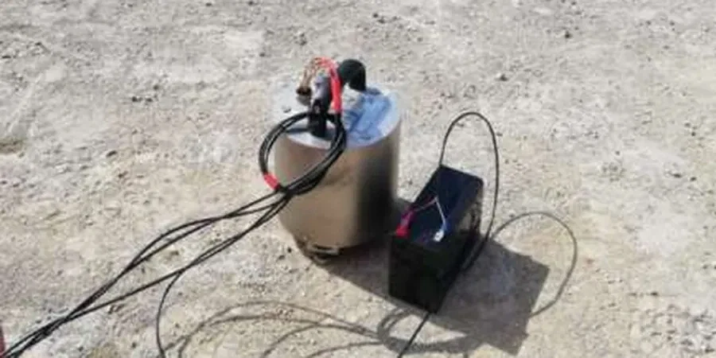

Many construction teams in Chandler assume the soil is uniformly stiff because the terrain looks flat. That assumption can lead to poor foundation design. The basin sediments here amplify ground motion differently across the city. Without an HVSR microtremor survey, you miss the natural frequency of the site. We use the Nakamura method to record ambient vibrations. A single station captures 30 to 60 minutes of data. The result is the H/V spectral ratio curve. That curve tells us the predominant period of the soil column. Before you run a MASW survey for shear-wave velocity, the HVSR survey helps define the resonance peak. It is a quick, non-invasive screening tool. We run it at every project location in Chandler before committing to deeper boreholes.

The H/V peak frequency from a 30-minute recording directly tells you if the site will resonate with a design earthquake.
Methodology and scope
Local considerations
A three-story apartment complex in Chandler was designed using generic soil parameters from a nearby subdivision. The contractor skipped the HVSR survey. After the first moderate earthquake, the building experienced uneven settlement and cracking in the shear walls. The resonance frequency of the site was 2.3 Hz, exactly matching the building's fundamental mode. That coincidence amplified the shaking by a factor of three. We were called to retrofit the foundation. The cost was four times the price of the original survey. We now recommend an HVSR microtremor survey for every structure taller than two stories in Chandler. It is a cheap insurance against resonance damage.
Applicable standards
ASCE 7-22 (Chapter 20, Site Classification), IBC 2021 (Section 1613, Seismic Design), SESAME Guidelines (European Research Project, 2004)
Associated technical services
Single-station HVSR recording
One station deployed for 30 minutes. Ideal for quick screening on small residential lots.
Array HVSR profiling
Multiple stations arranged in a grid. We generate a 2D frequency map of the entire project site.
HVSR + MASW combination
We run HVSR stations first, then a MASW line for Vs30. This gives both resonance frequency and shear-wave velocity profile.
Time-lapse HVSR monitoring
Repeated surveys before and after excavation or compaction. We track changes in soil stiffness over time.
Typical parameters
Frequently asked questions
How does an HVSR microtremor survey work on the Chandler basin?
The Chandler basin consists of deep alluvial sediments. The HVSR method records ambient vibrations from wind, traffic, and distant earthquakes. The ratio of horizontal to vertical motion peaks at the site's natural frequency. We interpret that peak to classify the site per ASCE 7.
What is the typical cost of an HVSR survey in Chandler?
The price ranges between US$1.660 and US$2.650 for a standard residential lot with 8 to 10 stations. Larger commercial projects with grid arrays cost more. Contact us for a quote tailored to your lot size.
How long does it take to get results after the field work?
Field recording takes one day for up to 12 stations. Data processing and interpretation require two additional business days. You receive a PDF report with H/V curves, frequency maps, and site class recommendation.
Can HVSR replace a borehole investigation in Chandler?
No. HVSR is a screening tool, not a replacement for borings. It tells you the resonance frequency but not the exact soil stratigraphy or strength. We always recommend combining HVSR with at least one SPT boring or a CPT sounding for complete geotechnical characterization.